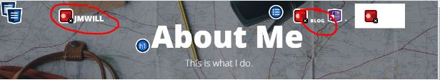
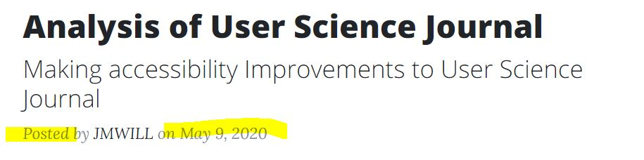
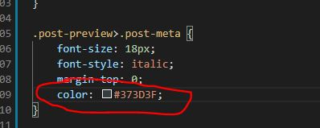
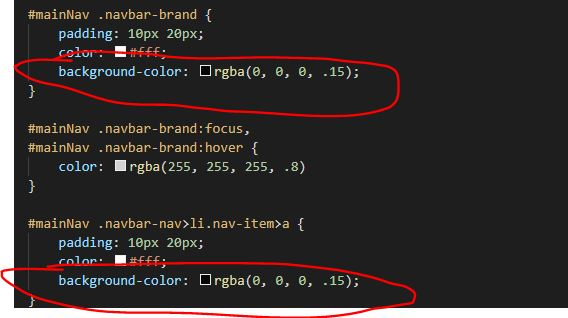
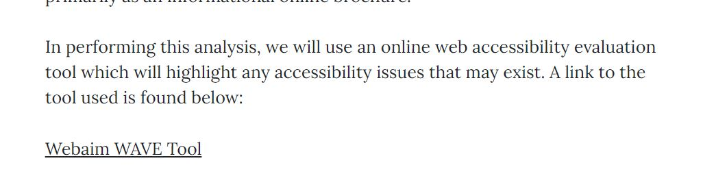

Introduction
This week we will be performing an analysis of this blog for use of accessibility principles in its design. Like last week, we'll use WAVE.webaim's accessibility analysis tool as well as Google's Lighthouse Audit tool. This post will summarize findings and the recommended fixed. Generally speaking, the baseline accessibilty score is relatively strong with a few changes that are needed. The most prominent issues are summarized below
Assessment
Issue 1: Contrast Errors
All pages on this blog have color contrast issues making some text difficult to read for the visually impaired. Contrast guidelines dictate that the contrast between text and its background must be sufficiently distinctive from each other. The guidelines specify a ratio of "4.5 to 1" for small text (below 18px) and "3 to 1" for large text. The actual math and meaning behind these numerical ratios, I cannot say. After attempting to research the underlying formula I was not able to obtain a sufficient explanation to repeat here. Contrast Errors were identified in several places on this blog, mainly the white text in the header and the light grey text used on the home page "posted by" and "date" texts in each post preview (pictures below).  
The fix to these issues is to add black shading behind the text that is currently white to create contrast, as seen below. For the "post preview" text, we will modify to a darker shade of grey (#373D3F) that creates adequate contrast. The CSS fixes for background shading for header elements shown below

The results of these changes can be seen in the current version of this page
Interested in seeing other possible text colors that conform to accessibility requirements? click below
Issue 2: Link Text
There are instances of link text not being sufficiently explanative, such as in week 5's post where an external link is accessed by clicking text that reads "here". A screen reader will read this as "link to here" providing no information as a standalone link, an individual would have to read the preceeding sentence to understand the link's purpose. Additionally, there are multiple instances of dead links (a href tags that lead to the top of the page, or to index.html despite being on index.html).
The fix to these issues is to add sufficient link text to legitimate links leading to relevent pages (image of revised text below), and to delete links that go nowhere
Issue 3: Repeatitive alt-text
There are several instances of alt-text descriptions being repeated on the same page, despite the images being different. This is because the dev (whoever that is) copied the img-src tag from elsewhere on the page and didnt bother to change the text. Not only do these text descriptions fail to proprety describe the images, but they also create confusion for the user who is left to believe that the same image is repeated multiple times
The fix for this is to modify the alt-text to be accurate descriptions of the image. Alt text was fixed on week 2, week 3, and week 5's posts
Summary
While generally accessible to begin with, some oversights were made in previous posts. We fixed alt-text, removed dead links, styled link text in a way that is useful to screen readers and added contrast to areas without sufficient contrast.